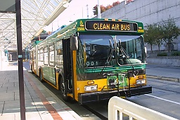

Metro’s Hybrid

This newer bus is a hybrid. It helps out by
making less polution. The reason that it's called hybrid bus is because
it has 2 things combinded together into one! In this case itis both diesel
and electrical.
Fleet Number:2599
Company:Metro King County
City:Bellevue
State:Washington
Years Made:2004-2005
Name:Metro King County Hybrid Bus {MKCHB}
Return to home page.
©2003 by Romanel G. Fleming